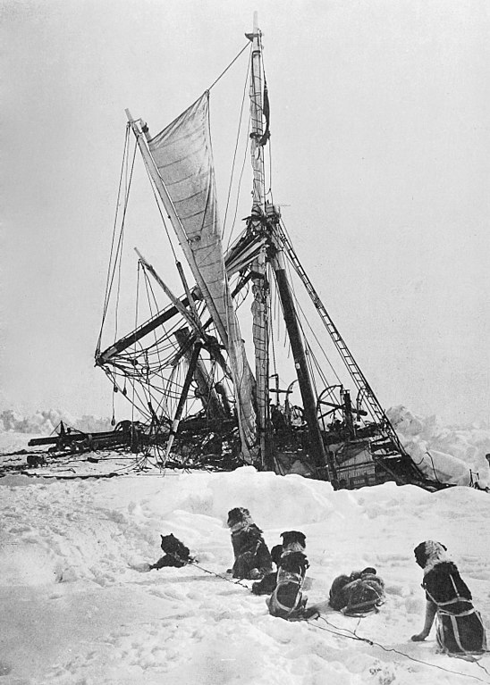
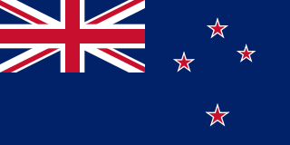
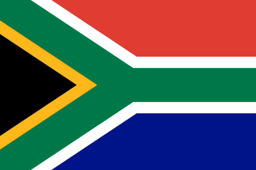

This is work in progress. Please check back in a couple of months.
I Speculation & Legend
c. 340 BC
Aristotle
In book II of Meteorologica (c.340 BC), Aristotle speculated:
"There are two inhabitable sections of the earth: one near our upper, or nothern pole, the other near the other or southern pole; and their shape is like that of a tambourine. If you draw lines from the centre of the earth they cut out a drum-shaped figure. The lines form two cones; the base of the one is the tropic, of the other the ever visible circle, their vertex is at the centre of the earth. Two other cones towards the south pole give corresponding segments of the earth. These sections alone are habitable. Beyond the tropics no one can live: for there the shade would not fall to the north, whereas the earth is known to be uninhabitable before the sun is in the zenith or the shade is thrown to the south: and the regions below the Bear are uninhabitable because of the cold."
c. 650 AD
Hui Te Rangiora
19th century New Zealand ethnologist Stephenson Percy Smith recorded
a lot of Maori and Polynesian oral tradition.
One notable story recorded by Smith was of Hui Te Rangiora/Ui Te Rangiora, a Rarotongan navigator.
Te Rangiora sailed south in a vessel called Te Ivi o Atea and reached a land called Tai-uka-a-pia.
This is described as "a foggy, misty, and dark place not seen by the sun. Other things are like rocks, whose summits pierce the skies, they are completely bare and without any vegetation on them".
Extract from Smith's 1899 journal article
Smith was convinced this referred to Antarctica.
However, the consensus of modern scholarship (including from Ngai Tahu Maori) is that
seventh century Polynesian sailors reaching the Antarctic is doubtful.
For context, this is at least four centuries before Polynesians reached New Zealand.
II Discovery
c. 1400s
Polynesians reach the Auckland Islands
There is archaeological evidence of Polynesian settlement of Enderby Island (460km south of mainland New Zealand).
This is the southmost known point of Polynesian exploration.
Remains left behind by Polynesian settlers (tools, fish hooks and bones left in an earth oven) and their dogs at Sandy Bay have been radiocabon dated to the thirteenth or fourteenth century.
These chaps lived on a hearty diet of sea lions, fur seals, albatrosses, and penguins.
They were on the Enderby island for at least one summer but don't seem to have made a permanent settlement.
The Auckland Islands were uninhabited when they were found by a European whaling ship in 1806.
1520
Crossing the Straits Magellan
Portuguese-born explorer Ferdinand Magellan crossed through the Straits of Magellan during the world's first circumnavigation.
He believed the islands of Terra del Fuego belonged to the unknown southern continent.
Fan art of Magellan discovering the strait by Johannes Stradanus (c. 1592)
1525
Discovery of the Drake Passage
In 1525, Spain discovered the Drake Passage south of Terra del Fuego.
As an interesting aside, in 1494 Spain and Portgual signed a treaty dividing the entire world between them.
In 1539, Charles V of Spain created an office called "the Governorate of terra Australis".
This essentially made some poor sod in Spain reponsible for a non-existent continent.
Spain and Portgual technically had the first two Antarctic claims
1603
Reported sighting
In 1603, Spanish explorer Gabriel de Castilla reported seeing snow covered mountains south of the Drake Passage (the ocean between the southern tip of South America and Antarctica).
As with Te Rangiora's story, there is doubt about this.
1675
Land discovered south of Antarctic Convergence
English merchant Anthony de la Roche visited Peru in 1674 and attempted to retun home via Cape Horn.
During the voyage from Chile to Brazil, poor weather off the coast of Staten Island caused his ship to be blown severely eastward.
They eventually landed on South Georgia Island.
1773
Crossing the Antarctic Circle
James Cook
On his first voyage (1768-1771), James Cook observed the Transit of Venus in Tahiti then searched in vain for Terra Australis.
He sailed around the coastline of New Zealand and Eastern Australia, unable to find the missing continent.
Back in Britain, the Royal Society (notably Alexander Dalrymple) insisted that a Southern Continent should exist.
So Cook, with the ships Resolution and Adventure, was sent back to have another look.
HMS Resolution
In December of 1772, Cook found an Island (Bouvet Island) reported by an earlier French navigator.
They kept heading south and eventually met "ice islands".
On 17 January 1773, they reached the Antarctic circle.
Then it got too cold so they retreated.
1820
First Sighting of the Continent
The first confirmed sighting of the continent of Antarctica was on 27 January 1820.
This was from a Russian expedition led by Fabian Gottlieb von Bellingshausen and Mikhail Lazarev with ships Vostok and Mirny.
They also discovered the first islands south of the Antarctic circle.
1821
First Landing
Map of known Antarctic (1843)
The first landing on the Antarctic continent is reported to have been American sealer John Davis on 7 February 1821.
Historians dispute this.
1839 - 1843
Search for the Magnetic South Pole
HMS Erebus and HMS Terror in the Antarctic, by James Wilson Carmichael
The Ross expedition into the Antarctic (1839 to 1843) was led by James Clark Ross with two warships, HMS Erebus and HMS Terror.
It explored the Ross Sea and discovered the Ross Ice Shelf.
On the expedition, Ross discovered the Transantarctic Mountains and the volcanoes Erebus and Terror (named after the ships).
The expedition inferred the position of the South Magnetic Pole (although failed to reach it), and was the last major voyage of exploration made wholly under sail.
Adelie penguin, from The Zoology of the Voyage of HMS Erebus and Terror
1853
First Landing on Eastern Antarctica
The first documented landing on the mainland of East Antarctica was at Victoria Land by the American sealer Mercator Cooper on 26 January 1853.
III Heroic Age of Exploration
1898
First wintering of the Antarctic
The Belgian Antarctic Expedition of 1897-1899 was the first expedition to winter in the Antarctic region.
Led by Adrien de Gerlache de Gomery aboard the RV Belgica, it was the first Belgian Antarctic expedition and is considered the first expedition of the Heroic Age.
Belgica trapped in ice, 1898
During the long polar night, one sailor went mad and left the ship to "walk home to Belgium".
Also, quite naturally, scurvy became an issue.
Frederick Cook, an American onboard, believed raw meat was a cure based on stories he had heard about Robert Peary (an American Arctic explorer).
He insisted the crew eat raw penguin and seal meat every day.
Gradually, the crew recovered.
It is now known that raw meat and organs contain a small amount of Vitamin C.
1901 - 1904
Discovery Expedition
The Discovery Expedition (officially the British National Antarctic Expedition), was the first official British Antarctic exploration since Ross sixty years earlier.
Winter Quarters Bay
Robert Falcon Scott led the expedition with the aim of reaching the South Pole.
While unsuccessful, they discovered the Cape Crozier emperor penguin colony, King Edward VII Land, and the Polar Plateau.
Sketch of emperor penguins (Sept. 1903)
1901 - 1903
Gauss Expedition
The first German expedition to Antarctica led by geologist Erich von Drygalski with the ship Gauss (named after the scientist).
The goal of the expedition was to ventured into the unexplored land south of the Kerguelen Islands.
Gauss spent nearly 14 months trapped in ice. But they discovered Kaiser Wilhelm II Land and a volcano they named Gaussberg.
1904
First permanent base in Antarctica
Omond House was built during the Scottish National Antarctic Expedition, this was the first permanent base in Antarctica.
Omond House
1907 - 1909
Nimrod Expedition
The Nimrod Expedition of 1907-1909, was the first of three successful expeditions to the Antarctic led by Ernest Shackleton.
Jameson Adams, Frank Wild and Eric Marshall at their southernmost position. Photographer: Ernest Shackleton, 9 January 1909.
The main target of this expedition was to be the first to the South Pole.
They failed in this objective - but it was a near miss.
Shackleton was only 180 km off.
They set a new record for southward exploration.
Interestingly, this expedition had a lack government support and was entirely dependent on private loans.
As a result, the expedition was done on a budget and the ship Nimrod was considerably smaller than Scott's Discovery.
This trip earnt Shackleton a knighthood.
1910 - 1912
Japanese Antarctic Expedition
This was the first Antarctic expedition from a non-European country.
Expedition leader Nobu Shirase in his Antarctic costume
The objective of this expedition was to reach the South Pole.
However, they failed to reach Antarctica during the first Antarctic season so had to spent winter in Australia.
On the second Antarctic season (1911-1912), they reached the continent.
No scientific discoveries, were made on this trip.
However, they did set some records:
First landing on Edward VII Land
Fastest recorded sledging journey
Reaching the easternmost point of the Antarctic coast by ship
14 December 1911
Roald Amundsen reaches the South Pole
The Roald Amundsen expedition (1910-1912) kept its intentions secret.
Amundsen was initially planning to reach the North Pole but, upon hearing of Britain's Terra Nova Expedition, he changed his plans.
He didn't tell anyone about his change of plans out of fear that he would lose his funding.
Scott visited Norway to test his motor sledges and called Amundsen to discuss cooperation - Amundsen didn't answer the phone.
Unlike the British, the Norwegians were perfectly happy using skis and sledge dogs, which they believed were the most efficient method of Arctic transport.
On 9 August 1910, the ship Fram left Norway for the South Pole.
They arrived at the Bay of Whales on 14 January 1911 and set up base (Framheim/home of Fram).
FramheimRacing towards the South Pole
On the 8th of March, in difficult conditions, they stopped at 82° S.
The dogs were exhausted.
The party then turned for home and reached Framheim on 22 March.
The sun set over Framheim on 21 April, not to reappear for four months.
Amundsen was well aware of the problems faced by Belgica and ensured the party was kept busy.
At sunrise on 24 August seven sledges were made ready.
However, the cold delayed them for a fortnight.
On 8 September 1911, when the temperature rose to -27 °C, Amundsen became impatient, and the party set off.
One man recorded that his sledge, with Amundsen aboard, nearly fell down a crevasse when a snow bridge broke underneath them.
Despite this near death experience they were covering more than 28 km a day, and reached their 82° S depot on 5 November.
On 17 November they reached the edge of the Barrier and faced the Transantarctic Mountains.
They spent a few days poking around the foothills and eventually found an apparently clear route, a steep glacier 56 km long leading upwards to the plateau.
After three days of difficult climbing the party reached the glacier summit.
When the party reached the summit of the glacier (at 85° S), Amundsen made preparations for the final stage of the adventure.
With heavyy hearts, they were forced to kill and eat some of their dogs.
On 25 November, they set off into the fog.
On 8 December the Norwegians passed Shackleton's record of 88°.
On 14 December 1911, at about 3 pm, the party reached the vicinity of the South Pole and planted the Norwegian flag.
The South Pole, 1911
On 25 January 1912, at 4 am, they arrived back at Framheim.
On 7 March, Fram reached Hobart and sent telegrams to his brother and to the king of Norway.
1910 - 1913
Terra Nova Expedition
Led by Captain Robert Falcon Scott, the objective of the Terra Nova Expedition was to "reach the South Pole, and to secure for the British Empire the honour of this achievement".
The ship Terra Nova set sail from Cardiff on 15 June 1910.
In Melbourne, Scott received a telegram informing him that Amundsen was "proceeding south".
This was the first indication to Scott that he was in a race.
Terra Nove left New Zealand for Antartica on 29 November 1910.
The overladen ship encountered a storm and lost loss of two ponies, a dog, 10,000 kg of coal and 300 L of petrol.
The ship then met pack ice, stalling the expedition by twenty days.
They eventually anchored at Cape Evans and lsot one of their motorised sledge during unloading.
They assembled a hut and had their base ready on 18 January 1911.
On 26 January, Campbell took the ship and headed east towards the Bay of Whales, where he discovered Amundsen's camp.
Campbell returned to Cape Evans and Scott received news of the Norwegians on 22 February.
British motor sledge
On 24 October, with two motor sledges, Scott set out for the South Pole.
By 1 November, both motor sledges were broken.
They reached the Pole on 17 January (over a month after Amundsen).
Scott at Amundsen's pole
During the return journey, Edgar Evans (after suffering from frostbite) collapsed. 17 February 1912.
Scott expected to meet the dog teams at 82°, but there was no sign of them.
Oates, with frostbitten hands and feet, announced "I am just going outside and may be some time" then left the tent and walked to his death. 16 March 1912.
Scott's last diary entry is from 29 March 1912.
1914 - 1917
Imperial Trans-Antarctic Expedition
The news of Amundsen's conquest of the South Pole reached Shackleton on 11 March 1912, to which he responded: "The discovery of the South Pole will not be the end of Antarctic exploration".
The last achievement to be unlocked in Antarctica was land crossing of the Antarctic continent.
According to legend, Shackleton posted the following advertisement in a London paper:
Shackleton's advertisement
The expedition required two ships (Endurance and Aurora): one at each end of the continent.
The plan was for Endurance to reach Vahsel Bay, however, it got trapped in ice and sunk before getting there.
Attempt to free the Endurance

The Endurance sinking
The 28 men left stranded survived for several months in ramshackle camps and eventually made their way to Elephant Island on lifeboats.
Shackleton and five others then made a journey across to South Georgia, where a rescue was arranged for the remaining men.
On December 5 1917, when Shackleton arrived at South Georgia, he asked how the Great War had ended.
The response was: "The war isn't over. Millions are dead. Europe is mad. The world is mad."
On the other side of the continent, the Ross Sea party overcame great hardships to fulfill its mission.
Aurora was blown from her moorings during a gale and was unable to return, leaving the shore party stranded without proper supplies or equipment.
Although the depots were still able to be laid, three people died before the party was rescued.
IV Contemporary Antarctica
1928
Trans-Antarctic Flight
Hubert Wilkins (a member of Shackleton's final visit to the Antarctic) flew over Antarctica.
1955 - 1958

Commonwealth Trans-Antarctic Expedition
The expedition was headed by British explorer Dr Vivian Fuchs and New Zealander Sir Edmund Hillary leading the New Zealand Ross Sea Support team.
After wintering at Shackleton Base (1957), Fuchs set out on the transcontinental journey in November 1957, with a twelve-man team travelling in six vehicles.
On the opposite side of the continent, Hillary's team set up Scott Base (Fuchs' final destination) at McMurdo Sound on the Ross Sea.
Hillary's party reached the South Pole on 3 January 1958, and was the third to reach the Pole overland (preceded by Amundsen in 1911 and Scott in 1912).
Fuchs' team reached the Pole from the opposite direction on 19 January 1958, meeting Hillary.
Edmund Hillary at Scott Base, 1957
On 2 March 1958, Fuchs succeeded in reaching Scott Base, completing the first overland crossing of the continent via the South Pole.
1 December 1959
Antarctic Treaty
The Antarctic Treaty was the first arms control agreement of the Cold War.
It defines Antarctica as all the land and ice shelves south of 60°S latitude and designates the continent as a scientific preserve, establishing freedom of scientific investigation, and banning military activity.
The original signatories were the 12 countries active in Antarctica during 1957-1958 were:
Argentina
Australia
Belgium
Chile
France
Japan
New Zealand
Norway
South Africa
the Soviet Union
the United Kingdom
the United States
As of 2023, the treaty has 56 parties
7 January 1978
First human to spawn on Antarctica
Emilio Marcos de Palma was born near Hope Bay on 7 January 1978, becoming the first baby born on the continent.
He also was born farther south than anyone in history
28 November 1979
Mount Erebus Disaster
On 28 November 1979, an Air New Zealand DC-10 on a sightseeing trip crashed into Mount Erebus on Ross Island, killing all 257 people on board.
18 January 1997
First solo crossing of Antarctica
Borge Ousland finished the first unassisted Antarctic solo crossing.
2010
Completion of the IceCube Neutrino Observatory
This fancy science machine was built in in 2010 and by 2013 had detected 28 neutrinos originating outside the Solar system.
I'm not entirely sure what country to attribute this to, but they have a website.
2020 December 21
Covid-19 reaches Antarctica
By 14 April 2020, bases in Antarctica contained only skeleton crews, with limited visitors.
The first confirmed cases were announced on 21 December 2020 by the government of Chile.
At least 36 people, including 10 civilians and 26 officers of the Chilean Army and Navy, were confirmed as positive COVID-19 cases after contracting the virus on the Base General Bernardo O'Higgins Riquelme.
Social Distancing in Antarctica (Stone Monki/Wikimedia, CC BY-SA)
People coming to Antarctica research stations have to (unclear if this is still the case) undergo isolation and COVID-19 screening.
Covid reached New Zealand's Scott Base, located several miles from McMurdo Station, in February of 2023.
9 March 2022

Endurance Discovered
The wreck of Endurance was discovered on 5 March 2022.
This was over a century after Shackleton watched it sink.